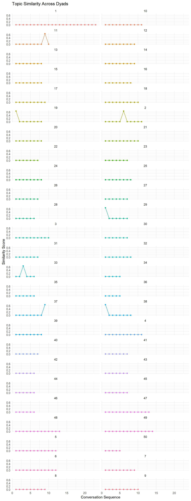
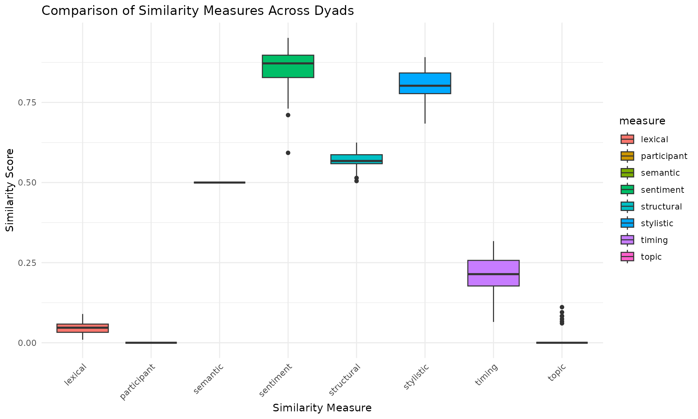

Analyzing Similarities in Conversational Sequences across Multiple Dyads
Source:vignettes/Analyzing_Similarities_in_Conversational_Sequences_across_Multiple_Dyads.Rmd
Analyzing_Similarities_in_Conversational_Sequences_across_Multiple_Dyads.RmdIntroduction
This vignette demonstrates how to use the functions provided in the
conversation_multidyads.R file to analyze conversations
across multiple dyads. These functions allow you to preprocess
conversation data and calculate various similarity measures between
conversation participants.
Loading the Data
We’ll use the provided dataset “dyad_example_data.Rdata” located in the inst/extdata directory of the package:
data_path <- system.file("extdata", "dyad_example_data.Rdata", package = "conversim")
load(data_path)
# Display the first few rows and structure of the data
head(dyad_example_data)
#> # A tibble: 6 × 3
#> dyad_id speaker_id text
#> <dbl> <chr> <chr>
#> 1 1 A What did you think of the new movie that just came out?
#> 2 1 B I haven’t seen it yet. Which one are you referring to?
#> 3 1 A The latest superhero film. I heard it’s getting great revi…
#> 4 1 B Oh, that one! I’ve been meaning to watch it. Did you enjoy…
#> 5 1 A Yes, I thought it was fantastic. The special effects were …
#> 6 1 B Really? What about the storyline? I heard it’s a bit predi…
str(dyad_example_data)
#> tibble [532 × 3] (S3: tbl_df/tbl/data.frame)
#> $ dyad_id : num [1:532] 1 1 1 1 1 1 1 1 1 1 ...
#> $ speaker_id: chr [1:532] "A" "B" "A" "B" ...
#> $ text : chr [1:532] "What did you think of the new movie that just came out?" "I haven’t seen it yet. Which one are you referring to?" "The latest superhero film. I heard it’s getting great reviews." "Oh, that one! I’ve been meaning to watch it. Did you enjoy it?" ...Preprocessing
Before analyzing the conversations, we need to preprocess the text data:
processed_convs <- preprocess_dyads(dyad_example_data)
head(dyad_example_data)
#> # A tibble: 6 × 3
#> dyad_id speaker_id text
#> <dbl> <chr> <chr>
#> 1 1 A What did you think of the new movie that just came out?
#> 2 1 B I haven’t seen it yet. Which one are you referring to?
#> 3 1 A The latest superhero film. I heard it’s getting great revi…
#> 4 1 B Oh, that one! I’ve been meaning to watch it. Did you enjoy…
#> 5 1 A Yes, I thought it was fantastic. The special effects were …
#> 6 1 B Really? What about the storyline? I heard it’s a bit predi…Calculating Similarities
Now, let’s calculate various similarity measures for our preprocessed conversations.
Topic Similarity
topic_sim <- topic_sim_dyads(processed_convs, method = "lda", num_topics = 5, window_size = 3)Lexical Similarity
lexical_sim <- lexical_sim_dyads(processed_convs, window_size = 3)Semantic Similarity
semantic_sim <- semantic_sim_dyads(processed_convs, method = "tfidf", window_size = 3)Structural Similarity
structural_sim <- structural_sim_dyads(processed_convs)Stylistic Similarity
stylistic_sim <- stylistic_sim_dyads(processed_convs, window_size = 3)Sentiment Similarity
sentiment_sim <- sentiment_sim_dyads(processed_convs, window_size = 3)Participant Similarity
participant_sim <- participant_sim_dyads(processed_convs)Timing Similarity
timing_sim <- timing_sim_dyads(processed_convs)
#> Warning in timing_sim_dyads(processed_convs): Only one observation per dyad.
#> Using simple mean for overall average instead of multilevel modeling.Visualization
Let’s visualize the results of our similarity analyses using ggplot2. Here’s an example of how to plot the topic similarity for each dyad:
topic_sim_df <- data.frame(
dyad = rep(names(topic_sim$similarities_by_dyad),
sapply(topic_sim$similarities_by_dyad, length)),
similarity = unlist(topic_sim$similarities_by_dyad),
index = unlist(lapply(topic_sim$similarities_by_dyad, seq_along))
)
ggplot(topic_sim_df, aes(x = index, y = similarity, color = dyad)) +
geom_line() +
geom_point() +
facet_wrap(~dyad, ncol = 2) +
labs(title = "Topic Similarity Across Dyads",
x = "Conversation Sequence",
y = "Similarity Score") +
theme_minimal() +
theme(legend.position = "none")
Comparing Different Similarity Measures
We can also compare different similarity measures across dyads:
comparison_df <- data.frame(
dyad = names(topic_sim$similarities_by_dyad),
topic = sapply(topic_sim$similarities_by_dyad, mean),
lexical = sapply(lexical_sim$similarities_by_dyad, mean),
semantic = sapply(semantic_sim$similarities_by_dyad, mean),
structural = unlist(structural_sim$similarities_by_dyad),
stylistic = sapply(stylistic_sim$similarities_by_dyad, mean),
sentiment = sapply(sentiment_sim$similarities_by_dyad, mean),
participant = unlist(participant_sim$similarities_by_dyad),
timing = unlist(timing_sim$similarities_by_dyad)
)
comparison_long <- reshape(comparison_df,
varying = list(names(comparison_df)[names(comparison_df) != "dyad"]),
v.names = "similarity",
timevar = "measure",
times = names(comparison_df)[names(comparison_df) != "dyad"],
new.row.names = 1:10000, # Adjust this if needed
direction = "long")
ggplot(comparison_long, aes(x = measure, y = similarity, fill = measure)) +
geom_boxplot() +
labs(title = "Comparison of Similarity Measures Across Dyads",
x = "Similarity Measure",
y = "Similarity Score") +
theme_minimal() +
theme(axis.text.x = element_text(angle = 45, hjust = 1))
Conclusion
This vignette demonstrates how to use the functions in
conversation_multidyads.R to analyze conversations across
multiple dyads using real-world data. These tools allow researchers to
examine various aspects of conversation dynamics, including topic
coherence, lexical alignment, semantic similarity, and more.
The visualizations provide insights into how different similarity measures vary across dyads and how they compare to each other. This can help in identifying patterns or trends in conversational dynamics.
Remember that the effectiveness of these analyses may depend on the size and nature of your dataset. Always consider the context of your conversations and the limitations of each similarity measure when interpreting the results.
For further analysis, you might consider:
- Investigating dyads with particularly high or low similarity scores.
- Examining how similarity measures change over the course of conversations.
- Correlating similarity measures with other variables of interest (e.g., conversation outcomes, participant characteristics).